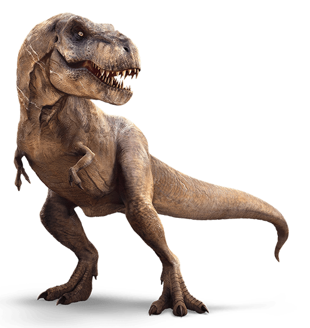

Cretaceous Period
During the Cretaceous Period, the most fearsome predator roamed North America. Tyrannosaurus Rex is the king of all dinosaurs

For a while, Tyrannosaurus Rex was thought to be the biggest and most deadliest of predatory dinosaurs, but as the years went on, paleontologists discovered much bigger specimens. This is one of them; Spinosaurs.

As part of a family of dinosaurs called ceratopsians, Triceratops is considered one of the most famous dinosaurs ever discovered.
In Jurassic Park, the velociraptor was believed to be as tall as a human. In reality, velociraptor was half the size of a human.
The Cretaceous seas had many dangerous predators ranging from sharks to plesiosaurs. However, the largest of the killers during this time period were the mosasaurs.